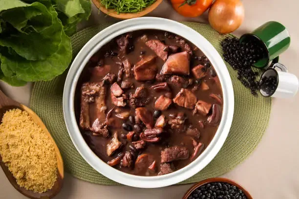

Recita de Feijoada
Ingredientes

- 500g de feijão preto
- 200g de carne seca
- 100g de linguiça calabresa
- 100g de paio
- 100g de costelinha de porco
- 1 cebola grande picada
- 4 dentes de alho picados
- 2 folhas de louro
- Sal e pimenta a gosto
- Azeite ou óleo para refogar
- Água suficiente para cozinhar o feijão
Modo de Preparo
- Deixe o feijão de molho em água por pelo menos 8 horas ou durante a noite.
Escorra e reserve.
- Cozinhe a carne seca em água fervente por cerca de 10 minutos para dessalgar.
Escorra, corte em pedaços e reserve.
- Em uma panela grande, aqueça o azeite ou óleo e refogue a cebola e o alho até ficarem dourados.
- Adicione a carne seca, a linguiça, o paio e a costelinha de porco à panela. Refogue por alguns minutos para dourar as carnes.
- Acrescente o feijão escorrido, as folhas de louro e cubra com água suficiente para cozinhar (cerca de 2 a 3 litros).
- Deixe cozinhar em fogo médio-baixo por aproximadamente 2 horas, ou até que o feijão esteja macio e as carnes estejam bem cozidas. Mexa ocasionalmente e adicione mais água se necessário.
- Tempere com sal e pimenta a gosto nos últimos 30 minutos de cozimento.
- Sirva a feijoada quente, acompanhada de arroz branco, couve refogada, farofa e laranja fatiada.
Dicas
- Para um sabor extra, você pode adicionar um pouco de bacon ou costelinha defumada.
- Deixe a feijoada descansar por alguns minutos antes de servir para que os sabores se intensifiquem.
- Se preferir uma feijoada mais cremosa, amasse alguns grãos de feijão contra a lateral da panela durante o cozimento.
Bom apetite!